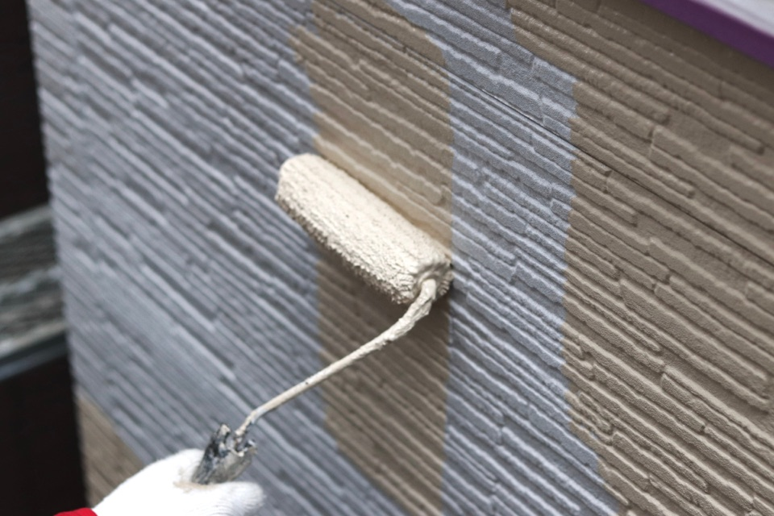

昇栄塗装 - 住まいを守り、価値を高める。外壁塗装・屋根塗装。千葉県全域対応
佐倉市で2023年7月より営業する昇栄塗装は、塗装歴15年以上の経験を活かして、戸建住宅・アパート・店舗などの塗装工事全般とリフォーム工事を承っています。 お住まいの劣化やイメージチェンジなど、お客様のご要望に合わせた最適なプランをご提案します。
サービス
昇栄塗装が提供する、塗装工事全般およびリフォームサービスの一例です。

施工事例
Instagramで公開している施工の様子をご紹介します。
※施工事例は Instagram の投稿を表示しています（自動表示時は Behold、手動表示時は Instagram 公式埋め込み）。
会社概要
会社情報
| 屋号 / 会社名 | 昇栄塗装 |
|---|---|
| 所在地 | 〒285-0837 千葉県佐倉市王子台6−42−2 |
| 代表者 | 岡田奨（塗装歴15年以上） |
| 開業 | 2023年7月7日 |
| 電話番号 | 070-9119-9440 |
| 事業内容 | 塗装工事全般 / 外壁・屋根塗装 / 防水工事 / 内部塗装 / リフォーム など |
ごあいさつ
昇栄塗装のホームページをご覧いただきありがとうございます。
私たちは、地域に根ざした塗装店として、一軒一軒のお住まいを自分の家のように大切に施工することを心がけています。
見た目のキレイさだけでなく、長く安心して暮らしていただけるよう、下地処理から仕上げまで丁寧な仕事を徹底しています。 お見積り・ご相談は無料ですので、まずはお気軽にお問い合わせください。
ごあいさつ
昇栄塗装のホームページを
ご覧いただきありがとうございます。
私たちは、地域に根ざした塗装店として、
一軒一軒のお住まいを自分の家のように
大切に施工することを心がけています。
見た目のキレイさだけでなく、
長く安心して暮らしていただけるよう、
下地処理から仕上げまで
丁寧な仕事を徹底しています。
お見積り・ご相談は無料ですので、
まずはお気軽にお問い合わせください。
よくある質問
外壁・屋根塗装やリフォームに関して、お客様からよくいただくご質問です。
見積もりは無料ですか？
はい、お見積り・ご相談は無料です。現地の状態を確認したうえで、工事内容に合わせたお見積りをご提示します。お気軽にお問い合わせください。
お支払い方法はどうなっていますか？
お支払いの方法・時期は、工事内容や金額により異なります。ご契約前にお見積り書とあわせてご案内いたします。詳しくはお問い合わせください。
どのような塗料を使用しますか？
外壁・屋根の素材、劣化の状態、ご予算やご希望の耐久性に合わせて、最適な塗料・工法をご提案します。複数のプランをご用意することも可能です。
対応エリアはどこですか？
千葉県佐倉市を中心に、四街道市・千葉市・八千代市・印西市・成田市・八街市・習志野市・船橋市・富里市など周辺地域の戸建住宅・アパート・店舗などの塗装工事に対応しております。エリア外の場合もご相談ください。
外壁だけの工事は可能ですか？
はい、外壁塗装のみ、屋根塗装のみ、防水工事、内部塗装など、部分的な工事にも対応しております。現地調査のうえ、必要な工事内容をご提案いたします。
お問い合わせ
外壁・屋根の状態チェックやお見積りのご相談など、お気軽にお問い合わせください。
ご希望の工事内容やご予算、時期などが決まっていなくても大丈夫です。
お問い合わせは3種類
TEL
電話でのご相談
070-9119-9440
受付時間 9:00〜18:00
FORM
お問い合わせ
フォームはこちら 24時間受付・最短当日ご返信 フォームを開く → LINE LINEでのご相談
はこちら 友だち追加でかんたん相談 友だち追加する →
フォームはこちら 24時間受付・最短当日ご返信 フォームを開く → LINE LINEでのご相談
はこちら 友だち追加でかんたん相談 友だち追加する →
※ お見積り・ご相談は無料です。いただいた内容は担当者よりご連絡いたします。
※ お急ぎの場合は、お電話でのお問い合わせも承っております。